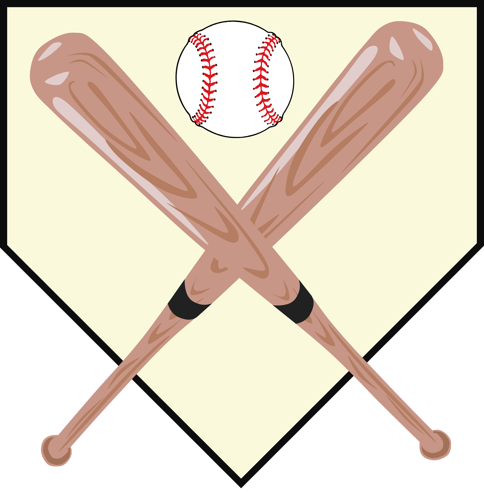

#스텟_계산기
#야구장_날씨
#프리미어_12
#기타_페이지
#STWS_메인
#스텟_계산기
#야구장_날씨
#프리미어_12
#기타_페이지
#STWS_메인
야구 스텟 계산기
타율, ERA, BB/K 등 야구의 여러 비율 스텟을 계산할 수 있는 웹 계산기 페이지입니다.
오늘의 야구장 날씨
KBO 9개 구장의 오늘 날씨를 알려주는 웹 페이지입니다.

2019 WBSC 프리미어12
2019년 11월에 열리는 국제 야구 대항전인 WBSC 프리미어 12와 관련된 비공식 웹 페이지입니다.
기타 메뉴
기타 야구 관련 잡다한 내용들을 모은 웹 페이지입니다.
🏠
Go To Main Site
🕐 Current Time:
🌐 STWS Version: Beta 0.1